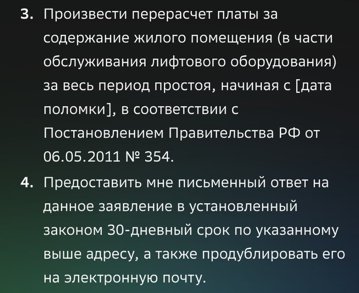

Бесплатные уроки · GigaChat
Получишь жалобу по своим фактам и проверишь, не выдуманы ли законы и сроки.
Не работает лифт, течёт крыша, неделю не убирают подъезд — нужна письменная жалоба. GigaChat пишет её за минуту, по-русски и по всем правилам: шапка, факты, требования. Без входа. Подвох — ссылки на законы. Они звучат солидно, а проверять их никто не будет, пока управляющая компания не ответит, что ты ошибся.
В [скобках] — твоя история: что сломалось, с какого числа, куда ты уже обращался и номер заявки. Чем точнее факты, тем меньше нейросеть додумает.
Напиши жалобу в управляющую компанию. Факты: [в подъезде № 2 дома по ул. Садовой, 14 с 28 сентября не работает лифт. 29 сентября я подал заявку в диспетчерскую, номер 4512, лифт так и не починили]. Требую: [починить лифт и сделать перерасчёт платы за содержание за дни простоя]. Пиши только по этим фактам, вежливо и твёрдо, до 150 слов. Ссылки на законы и сроки не пиши.
Сначала мы попросили коротко: «Напиши жалобу в управляющую компанию: в нашем подъезде уже 5 дней не работает лифт». GigaChat выдал грозную претензию с пятью ссылками на законы и постановления. Две мы проверили — обе мимо.

С ошибкой в законе жалоба выглядит слабее: управляющая компания ответит про «неверную ссылку» и промолчит про лифт. С запросом из урока GigaChat написал короткое заявление по фактам: подъезд, даты, номер заявки, два требования — и ни одного закона. Только одну фразу добавил от себя: «особенно для пожилых людей и семей с детьми». Если в подъезде таких нет, убери.
Распечатай в двух экземплярах. Один отдай в управляющую компанию, на втором попроси отметку: дату, подпись и входящий номер. По нему потом спрашивают ответ.
Возьми настоящую проблему в доме или во дворе. Напиши жалобу по фактам и проверь её по четырём пунктам перед печатью.
Урок рассчитан на сайт giga.chat без входа; кнопки могут отличаться в приложении и после обновлений. Урок о том, как написать бумагу, а не юридическая консультация: в споре о деньгах спроси юриста или жилищную инспекцию. Подписка на наше обучение не включает платные тарифы нейросетей.
GigaChat — запросы урока проверены 3 октября 2026 без входа. Срок ответа управляющей компании — письмо Минстроя России от 04.07.2025 № 18667-ОГ/00; правила изменения платы за содержание — постановление Правительства № 491. Сверено 3 октября 2026. Урок не заменяет юридическую консультацию.
Следующий урок — «Домашка: объяснить ребёнку дроби за 5 минут». Получишь объяснение и задачки для ребёнка и проверишь каждый ответ.
Читать следующий урокКак войти и что ещё умеет GigaChat — разбор на сайте. Все нейросети, которые открываются из России, — на одной странице.